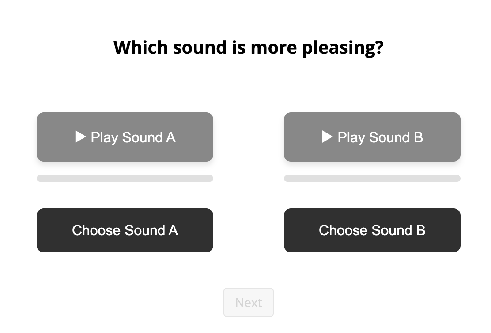

<!DOCTYPE html>
<html>
<head>
    <meta charset="UTF-8">
    <title>Which sounds do you prefer?</title>
    <script src="https://cdn.socket.io/4.7.5/socket.io.min.js"></script>
    <script src="https://unpkg.com/jspsych@7.3.4"></script>
    <script src="https://unpkg.com/@jspsych/plugin-html-keyboard-response@1.1.3"></script>
    <script src="https://unpkg.com/@jspsych/plugin-html-button-response@1.1.3"></script>
    <link href="https://unpkg.com/jspsych@7.3.4/css/jspsych.css" rel="stylesheet" type="text/css" />
    <script src="https://unpkg.com/@jspsych/plugin-fullscreen@1.2"></script>
    <script src="js/utils/lodash.js"></script>
    <script src="js/game_settings.js"></script>
    <script src="jspsych-audio-preference.js"></script>
</head>
<body>
    <script>
        // List of condition files
        const conditionFiles = [
            'condition_1_trials.json',
            'condition_2_trials.json',
            'condition_3_trials.json',
            'condition_4_trials.json'
        ];

        let socket = io.connect();

        // Extract URL parameters
        var urlParams = new URLSearchParams(window.location.search);
        try {
            gs.prolific_info.prolificID = urlParams.get('PROLIFIC_PID');
            gs.prolific_info.prolificStudyID = urlParams.get('STUDY_ID');
            gs.prolific_info.prolificSessionID = urlParams.get('SESSION_ID');
        } catch (error) {
            console.error('Error obtaining prolific URL parameters:', error);
        }

        // Get condition_ID (0-3 for 4 conditions) from URL params
        let conditionID = urlParams.get('condition_id');
        conditionID = parseInt(conditionID);
        if (conditionID === null) {
            console.error('No condition ID provided in URL params.');
        } else if (isNaN(conditionID) || conditionID < 0 || conditionID >= conditionFiles.length) {
            console.error('Invalid condition ID provided:', conditionID);
        }
        
        
        // Select the appropriate condition file
        const selectedFile = conditionFiles[conditionID];
        
        // Dynamically load the selected condition file
        const script = document.createElement('script');
        script.src = selectedFile;
        script.onload = function() {
            // Run experiment after the trial data is loaded
            runExperiment(conditionID);
        };
        script.onerror = function() {
            document.body.innerHTML = `
                <div style="text-align: center; margin-top: 50px;">
                    <h2>Error Loading Condition File</h2>
                    <p>Could not load: ${selectedFile}</p>
                    <p>Please make sure all condition files are in the same directory.</p>
                </div>
            `;
        };
        document.head.appendChild(script);
    </script>
    <script>
        // Function to shuffle an array
        function shuffle(array) {
            const shuffled = [...array];
            for (let i = shuffled.length - 1; i > 0; i--) {
                const j = Math.floor(Math.random() * (i + 1));
                [shuffled[i], shuffled[j]] = [shuffled[j], shuffled[i]];
            }
            return shuffled;
        }
        
        // Function to run the experiment
        function runExperiment(conditionID) {
            gs.session_info.send_data = function (data) {
                console.log("sending data to server...");
                json = _.extend({},
                    { study_metadata: gs.study_metadata },
                    { session_info: _.omit(gs.session_info, 'on_finish', 'stimuli') },
                    { prolific: gs.prolific_info },
                    data);
                socket.emit('currentData', json,
                    gs.study_metadata.project, //dbname
                    gs.study_metadata.experiment, //colname
                    gs.session_info.gameID,
                );
                console.log(gs.study_metadata.project, gs.study_metadata.experiment, gs.session_info.gameID);
                console.log("data sent.");
            }

            // Initialize jsPsych
            const jsPsych = initJsPsych({
                on_finish: function (data) {
                    console.log("Experiment complete. Preparing to send data...");
                    console.log(data);
                    gs.session_info.send_data(data);

                    // Exit fullscreen
                    if (document.exitFullscreen) {
                        document.exitFullscreen();
                    } else if (document.mozCancelFullScreen) {
                        document.mozCancelFullScreen();
                    } else if (document.webkitExitFullscreen) {
                        document.webkitExitFullscreen();
                    } else if (document.msExitFullscreen) {
                        document.msExitFullscreen();
                    }

                    // Redirect to Prolific
                    window.onbeforeunload = null;
                    window.open("https://app.prolific.com/submissions/complete?cc=CLF8SUI4", "_self");
                }
            });
            
            // Create timeline
            const timeline = [];
            
            // CONSENT FORM
            const consent = {
                type: jsPsychHtmlButtonResponse,
                stimulus:
                '<div style="padding: 0 100px;">' +
                '<h2>Which sounds do you prefer?</h2><div style="text-align: left">' +
                "<p>Welcome! In this study, you will be asked to listen to some sounds and tell us which are more pleasing. The session should take about <b>5-10 minutes</b>.</p>" +
                "<div class='consent'>" +
                "<p>By clicking below, you are agreeing to take part in a study being conducted by cognitive scientists in the <b>Department of Psychology at Stanford University</b>. If you have questions about this research, please contact us at <a href='mailto:cogtoolslab.requester@gmail.com?subject=Image Scoring Study'>cogtoolslab.requester@gmail.com</a>. We will do our best to respond promptly and professionally.</p>" +
                "<ul>" +
                "<li>You must be at least 18 years old to participate.</li>" +
                "<li>Your participation is voluntary.</li>" +
                "<li>You may decline to answer any question or stop the study at any time without penalty.</li>" +
                "<li>Your responses are anonymous and will be analyzed only in aggregate form.</li>" +
                "</ul>" +
                "</div></div>" +
                "<p>Do you consent to participate in this study as described above?</p>" +
                '</div>',
                choices: ["Yes, I agree to participate"],
                margin_vertical: "30px",
                //make fullscreen on finish
            };
            timeline.push(consent);
            enterFullscreen = {
                type: jsPsychFullscreen,
                fullscreen_mode: true,
                message: '<p>The experiment will switch to fullscreen mode when you press the button below.</p><p>Press the button to begin.</p>',
            };
            timeline.push(enterFullscreen);

            const audioCheck = {
                type: jsPsychHtmlButtonResponse,
                stimulus: '<div style="padding: 0 100px;"><p>Make sure your sound is on and volume is up! To confirm, listen to this clip and click the word you hear.</p><audio src="delay-spoken.wav" controls style="margin-bottom:10px;"></audio></div>',
                choices: ['explain', 'orange', 'support', 'delay', 'table', 'guitar'],
                data: { study_phase: "audio_check" },
                on_load: function () {
                    const buttons = document.querySelectorAll('.jspsych-btn');
                    buttons.forEach(btn => btn.disabled = true);
                    setTimeout(function () {
                        buttons.forEach(btn => btn.disabled = false);
                    }, 3000);
                }
            };
            const audioCheckLoop = {
                timeline: [audioCheck],
                loop_function: function (data) {
                    return data.values()[0].response !== 3; // Keep looping until they select 'delay' (index 3)
                }
            };
            timeline.push(audioCheckLoop);
            
            
            const instructions =  {
                intro1: '<div style="padding: 0 100px;"><p>In this study, you will listen to several pairs of sounds. After hearing each pair of sounds, indicate the one you found more <b>pleasing</b> to listen to.</p></div>',
                intro2: '<div style="padding: 0 100px;"><p>In each trial, you\'ll have to listen to both sounds before indicating which you found more pleasing. You can listen to the sounds as many times as you need.</p> </img></div>'
            }
            
            const intro1 = {
                type: jsPsychHtmlButtonResponse,
                stimulus: instructions.intro1,
                choices: ['Continue'],
            };
            
            const intro2 = {
                type: jsPsychHtmlButtonResponse,
                stimulus: instructions.intro2,
                choices: ['Continue'],
            };
            
            timeline.push(intro1);
            timeline.push(intro2);
            

            // Shuffle the trials
            const shuffledTrials = shuffle(trialsData);
            
            // Create jsPsych trials
            shuffledTrials.forEach((trialData, presentationOrder) => {
                // Counterbalance: randomly assign which audio is A and which is B
                const aIsMusical = Math.random() < 0.5;
                
                const audioA = aIsMusical ? trialData.audio1 : trialData.audio2;
                const audioB = aIsMusical ? trialData.audio2 : trialData.audio1;
                const labelA = aIsMusical ? 'Musical' : 'Referential';
                const labelB = aIsMusical ? 'Referential' : 'Musical';
                
                // Determine which file is which type
                const file1IsMusical = trialData.file1_name.includes('musical');
                const file2IsMusical = trialData.file2_name.includes('musical');
                
                const trial = {
                    type: jsPsychAudioPreference,
                    audio_a: audioA,
                    audio_b: audioB,
                    label_a: 'Sound A',
                    label_b: 'Sound B',
                    prompt: `Which sound is more pleasing? (${presentationOrder + 1} of ${shuffledTrials.length})`,
                    data: {
                        conditionID: conditionID,
                        presentation_order: presentationOrder,
                        file1_name: trialData.file1_name,
                        file2_name: trialData.file2_name,
                        file1_trial_index: trialData.file1_trial_index,
                        file2_trial_index: trialData.file2_trial_index,
                        a_is_musical: aIsMusical,
                        a_file: aIsMusical ? trialData.file1_name : trialData.file2_name,
                        b_file: aIsMusical ? trialData.file2_name : trialData.file1_name,
                        start_state: trialData.start_state,
                        end_state: trialData.end_state
                    },
                    post_trial_gap: 1000,
                    on_finish: function(data) {
                        // Determine which type was selected
                        if (data.selected_choice === 'A') {
                            data.selected_type = data.a_is_musical ? 'musical' : 'referential';
                        } else {
                            data.selected_type = data.a_is_musical ? 'referential' : 'musical';
                        }
                        gs.session_info.send_data(data);
                    }
                };
                timeline.push(trial);
            });
            
            // Thank you screen
            const thankyou = {
                type: jsPsychHtmlButtonResponse,
                stimulus: '<div style="padding: 0 100px;"><p>Thank you! You\'ve reached the end. In a moment, click <i>Finish</i> to return to Prolific.</p></div>',
                choices: ['Finish'],
            };
            timeline.push(thankyou);
            
            // Run the experiment
            jsPsych.run(timeline);
        }
    </script>
</body>
</html>
